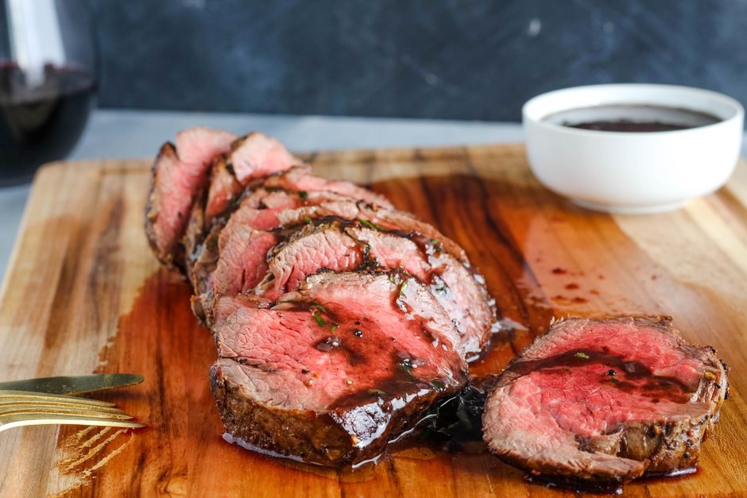

French steak

a beautiful center-cut piece of beef tenderloin, along with a classic red wine sauce.
The cut lives up to its name, providing the most naturally tender, succulent piece of beef available. Note that a filet mignon, another pricey steakhouse cut, is from the smaller end of the beef tenderloin.
Ingredients
- 1 pound beef tenderloin (center cut)
- Salt, to taste
- Freshly ground black pepper, to taste
- 3 tablespoons unsalted butter, softened and divided
- 2 tablespoons olive oil
- 1 medium shallot, finely chopped
- 1/2 cup medium-bodied dry red wine
- 1/2 cup demi-glace
- 1 tablespoon fresh tarragon, chopped (or 2 teaspoons dried)
Recipe instructions(taken from the website)
- Preheat the oven to 375 F. Evenly season the beef with salt and pepper.
- Melt 2 tablespoons of the butter with the olive oil in a large skillet (preferably cast iron) set over medium-high heat until cloudy and bubbly.
- Place the seasoned meat in the pan and brown for 3 minutes without moving the meat. Using tongs, carefully turn the tenderloin on its side and brown for 3 minutes more. Repeat the same browning process on all exposed surfaces of the meat.
- Transfer the tenderloin to a rack placed in a roasting pan and put in the oven. (Set aside the skillet with any accumulated juices for making the sauce.) Roast the beef to your desired doneness, about 15 minutes for medium-rare, 20 minutes for medium, and 23 minutes for medium-well.
- Remove the meat from the oven and transfer to a warm serving platter. Lightly tent the meat with foil and let it rest for 15 minutes.
- While the tenderloin is resting, make the wine sauce. Combine the shallot with the juices in the skillet and sauté over medium heat until the shallot is soft and translucent.
- Pour the wine into the skillet and bring the sauce to a boil, scraping up any browned bits on the bottom of the pan.
- Continue boiling the sauce until it reduces by half.
- Add the demi-glace to the sauce and continue boiling the mixture until slightly thickened.
- Remove the sauce from the heat and stir in the remaining 1 tablespoon softened butter and tarragon. Taste and season with salt and black pepper as needed.
- Slice the meat on the diagonal and serve with the wine sauce. Enjoy.
Return to top
Return to main page